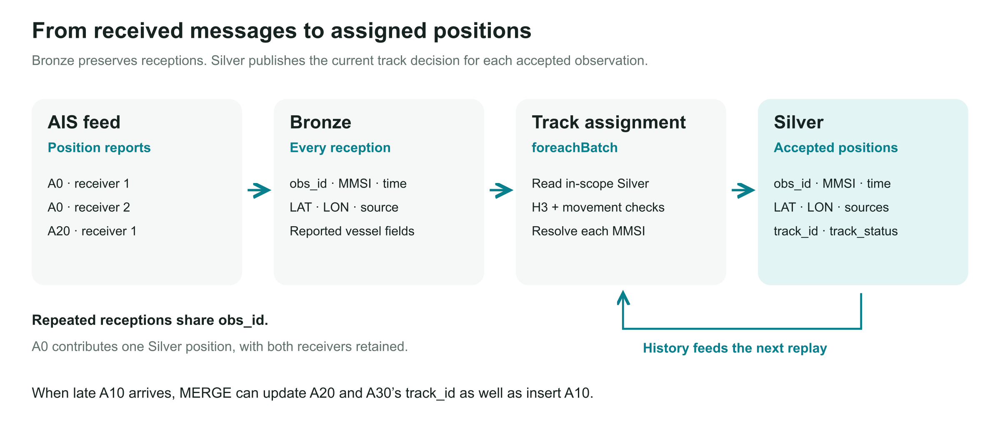
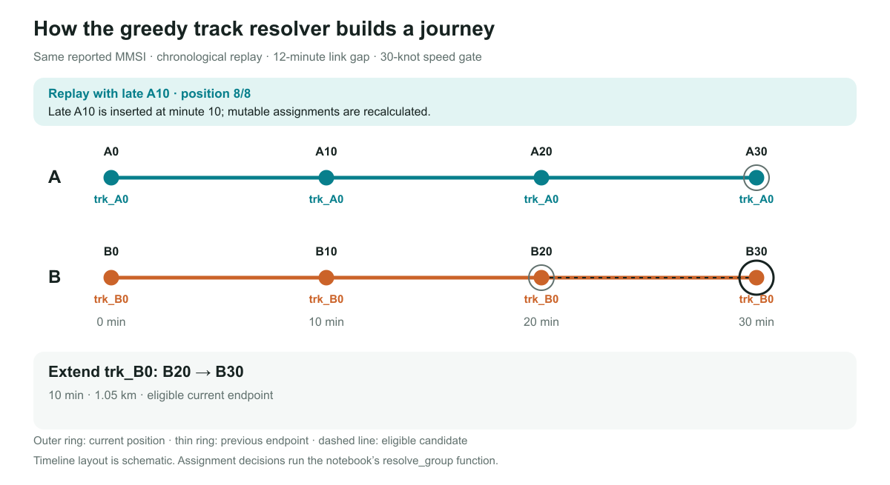

AIS positions to vessel activity Light / dark
From position reports Eight companion illustrations for resolving tracks and deriving port and berth callings.
Tutorial guide · Figure guide
One MMSI, two vessels Late report joins two segments Correction window versus maximum link gap H3 candidates and motion gates Segments to vessel-history hypotheses One position, two kinds of presence A calling is an island of consecutive inside observations Corrections replace the answer rather than only appending rows How AIS reports reach the world Local VHF reception and satellite collection turn vessel broadcasts into position feeds.
Identity and tracks One MMSI, two vessels One MMSI, two vessels Schematic spatial routes. Naive links zigzag between vessels; separate segments preserve all observations. One identifier. Two independent movement sequences. Connect everything by MMSI Retain separate track segments Naive interleaved links A0 observed position A0 A20 observed position A20 A30 observed position A30 B0 observed position B0 B10 observed position B10 B20 observed position B20 B30 observed position B30 Independent segment A Independent segment B A0 observed position A0 A20 observed position A20 A30 observed position A30 B0 observed position B0 B10 observed position B10 B20 observed position B20 B30 observed position B30 Arrival order is not a vessel journey. A0 stays tentative until the bridge arrives. ● Vessel A ■ Vessel B Shared MMSI does not require a shared track.
Schematic spatial routes. Naive links zigzag between vessels; separate segments preserve all observations.
Identity and tracks Late report joins two segments Late report joins two segments Before the A10 report arrives A0 cannot link across a 20-minute gap. Afterwards consecutive gaps are ten minutes. A late observation changes an earlier answer. BATCH 0 · bridge missing 20 min > 12 min link gap A0 0 min missing 10 min A20 20 min A30 30 min Observed BATCH 1 · bridge received A0 0 min A10 10 min A20 20 min A30 30 min Observed A10 arrives later, but belongs between A0 and A20 in observation time. Replay merges the segment: A20 and A30 take the A0 anchor.
Before the A10 report arrives A0 cannot link across a 20-minute gap. Afterwards consecutive gaps are ten minutes.
Identity and tracks Correction window versus maximum link gap Correction window versus maximum link gap Horizon60 cutoff15. Positions20 and40 are both mutable but cannot link across20minutes. Frozen minute10 can seed the window. Two time limits. Two different jobs. Frozen observations before minute15 Correction window includes minute15 through60 Frozen 45-minute correction window Cutoff · 15 Horizon · 60 0 10 15 20 40 50 60 too old for a seed seed P20 P40 P50 Two mutable positions with a 20-minute gap 20 min > 12 Both mutable; this link is ineligible. Ten-minute gap is time eligible 10 min ≤ 12 Window: which assignments may change? Link gap: which pairs may connect? Frozen seeds supply context, not corrections.
Horizon60 cutoff15. Positions20 and40 are both mutable but cannot link across20minutes. Frozen minute10 can seed the window.
Identity and tracks H3 candidates and motion gates A schematic H3 neighbourhood contains two predecessors. One is within the exact reachable distance for its elapsed time; one is not.
Identity and tracks Segments to vessel-history hypotheses Segments to vessel-history hypotheses Two vessels share an MMSI. Separate segment chains could map to separate vessel histories. The linking stage is planned, not implemented. A reporting gap splits segments, not necessarily vessel identity. PLANNED NEXT STAGE · segment linking is on the backlog Same MMSI · vessel A A segment 1 end gap > 12 min A segment 2 end A history hypothesis IMO only with identity evidence Same MMSI · vessel B B segment 1 end gap > 12 min B segment 2 end B history hypothesis IMO only with identity evidence Proposed links require plausible transitions and corroborating identity evidence. Keep segment IDs. Preserve competing histories and unresolved associations.
Two vessels share an MMSI. Separate segment chains could map to separate vessel histories. The linking stage is planned, not implemented.
Port and berth callings One position, two kinds of presence One position, two kinds of presence Schematic nested port and berth polygons. Points can be outside both, inside only the port, or inside both. A berth visit sits inside a broader port calling. PORT LOCATION BERTH LOCATION Outside Port only Port + berth B · port only VESSELS A AND B Separate vessel IDs A position can support both locations; the calling keys still differ. Each position can belong to the port and to a berth within it.
Schematic nested port and berth polygons. Points can be outside both, inside only the port, or inside both.
Port and berth callings A calling is an island of consecutive inside observations A calling is an island of consecutive inside observations All-position numbers1through6 include outside reports. Inside-match numbers1through3 omit them. Differences1,1,2 identify two inside runs. Number every position. Then number only the inside matches. Time (min) 0 10 20 25 30 40 Location match OUT IN IN OUT IN OUT Position # 1 2 3 4 5 6 Match # — 1 2 — 3 — Difference — 1 1 — 2 — Difference 1 → first visit Difference 2 → second visit OUT at 25 advances only Position #, so the next IN begins a new island.
All-position numbers1through6 include outside reports. Inside-match numbers1through3 omit them. Differences1,1,2 identify two inside runs.
Port and berth callings Corrections replace the answer rather than only appending rows Corrections replace the answer rather than only appending rows Initial inside reports10,20,30 form one run. Late outside25 splits it. Late inside8 moves the first run start earlier, retiring its old calling anchor. Late evidence can split a calling — or change its anchor. Initially 0 8 10 20 25 30 40 Late OUT at 25 0 8 10 20 25 30 40 Then late IN at 8 0 8 10 20 25 30 40 IN IN IN OUT 1 visit IN IN OUT OUT 2 visits IN IN OUT OUT 2 visits A8 moves the first port entry to 8. Replace the old entry key atomically.
Initial inside reports10,20,30 form one run. Late outside25 splits it. Late inside8 moves the first run start earlier, retiring its old calling anchor.
Identity and tracks From received messages to assigned positions 
Preserve receptions, resolve each MMSI and publish revisable track decisions.
Identity and tracks Watch the greedy resolver and late A10 replay 
Assignment decisions are generated using notebook 1’s resolve_group function.
Editable SVG artwork and PNG exports accompany the two tutorial notebooks.